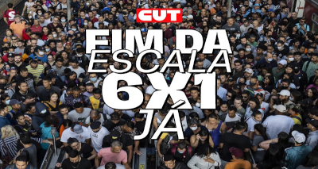

• Politica • Eleições • Pesquisas
Seja bem vindo ao
Por Trás do Discurso
O projeto consiste em criar uma plataforma de informações sobre a política brasileira, buscando trazer mais informações de forma acessível e transparente para todos os usuários.
Eleições 2026
Foram entrevistados 5.015 eleitores pela AtlasIntel/Bloomberg, entre os dias 17 e 22 de setembro; margem de erro é de um ponto percentual, para mais ou para menos.

Escala 6x1
Escala 6x1 atinge quase 15 milhões; Flávio Bolsonaro é contra aprovação da PEC.